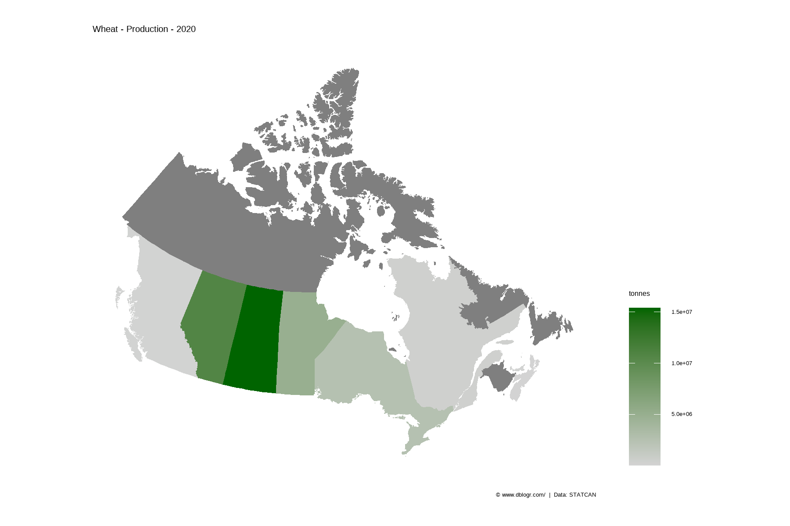
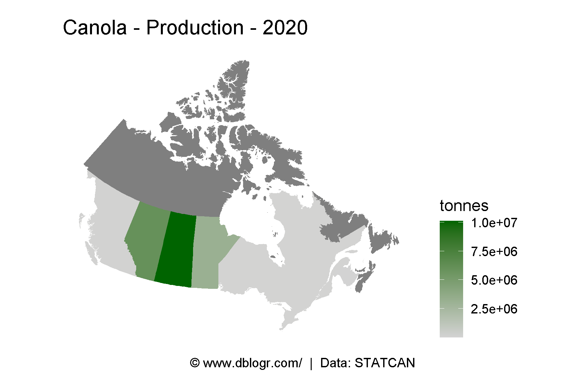
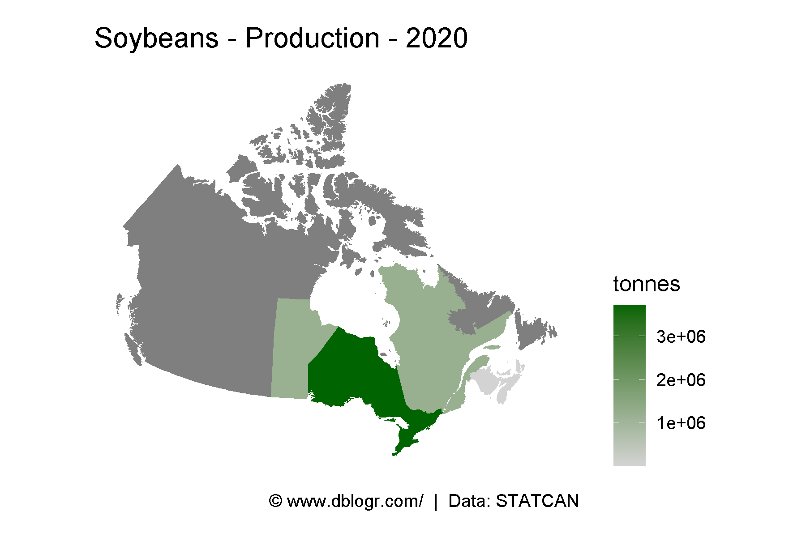
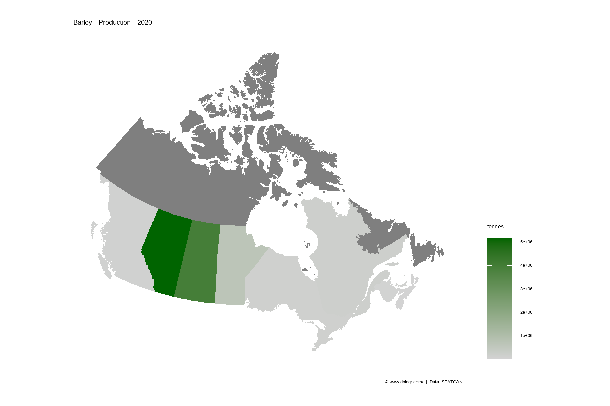
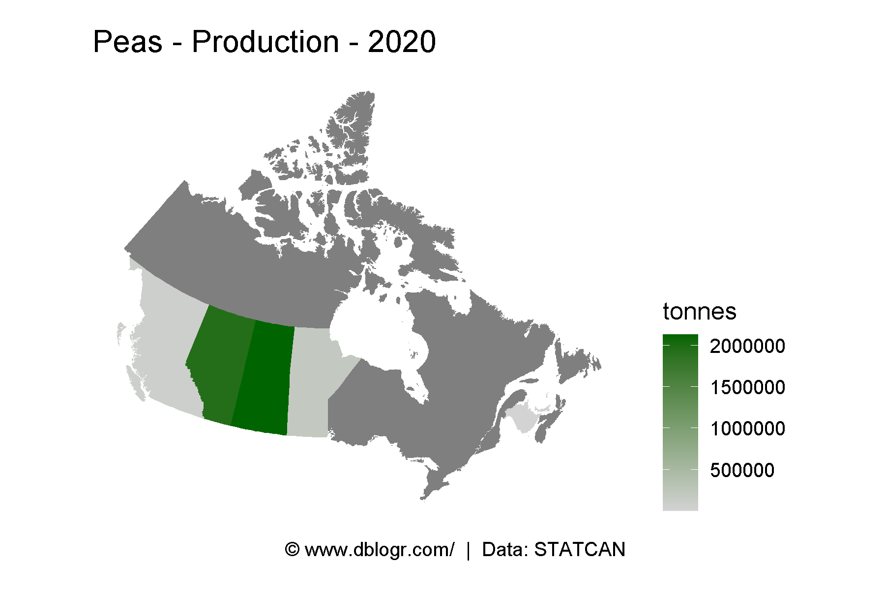
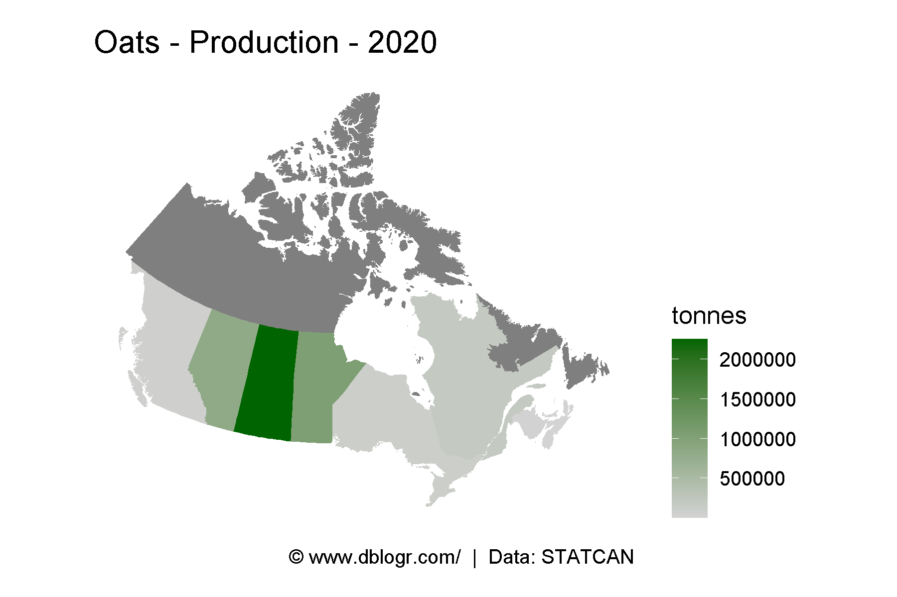
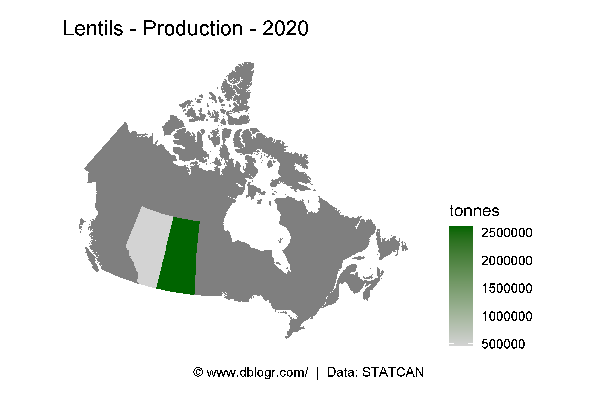
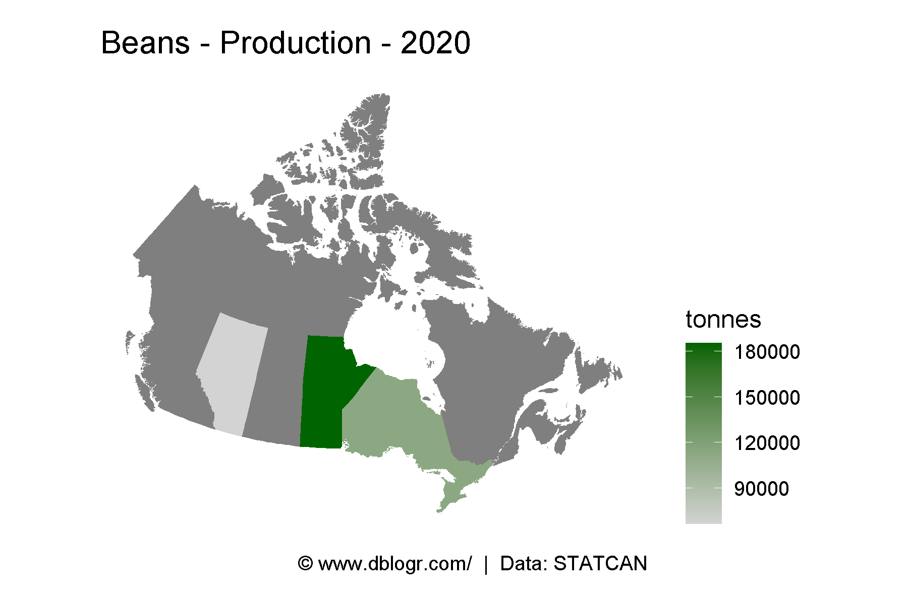
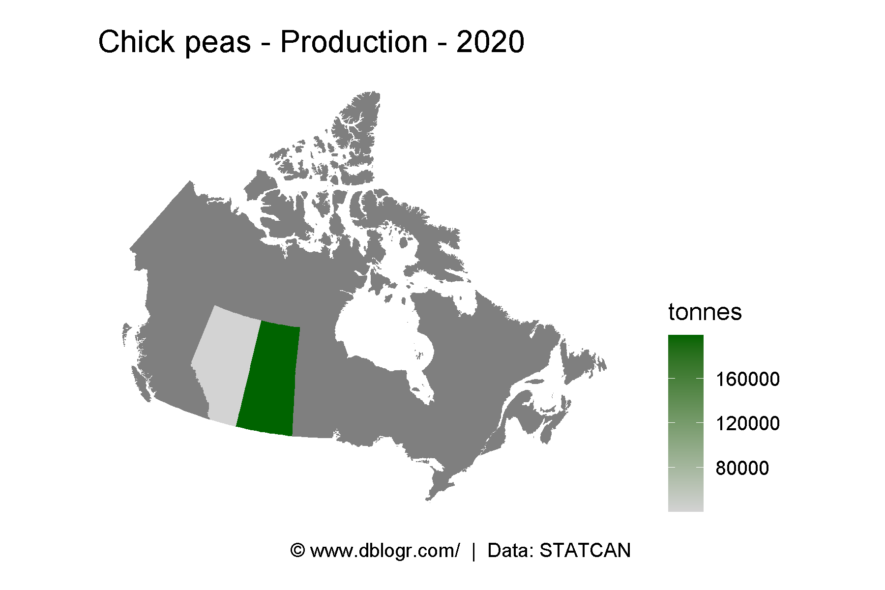

# devtools::install_github("derekmichaelwright/agData")
library(agData) # Loads: tidyverse, ggpubr, ggbeeswarm, ggrepel
library(mapcan)# Prep data
xx <- agData_STATCAN_Crops
# Plot
pdf("crops_canada_maps_statcan.pdf", width = 6, height = 4)
for(i in unique(xx$Crop)) {
xi <- xx %>% filter(Crop == i, Year == max(Year), Measurement == "Production")
xi <- mapcan(boundaries = province, type = standard) %>%
left_join(xi, by = c("pr_english"="Area"))
print(ggplot(xi, aes(x = long, y = lat, group = group, fill = Value / 1000000)) +
geom_polygon() +
coord_fixed() +
theme_mapcan() +
scale_fill_continuous(name = "Million Tonnes",
low = "lightgrey", high = "darkgreen") +
theme(legend.position = "right") +
labs(title = paste(i, "- Production -", max(xi$Year)),
caption = "\xa9 www.dblogr.com/ | Data: STATCAN")
)
}
dev.off()## png
## 2cropMapCan <- function(crop, measurement, year) {
xx <- agData_STATCAN_Crops %>%
filter(Crop == crop, Year == year, Measurement == measurement)
xx <- mapcan(boundaries = province, type = standard) %>%
left_join(xx, by = c("pr_english"="Area"))
# Plot
ggplot(xx, aes(x = long, y = lat, group = group, fill = Value)) +
geom_polygon() +
coord_fixed() +
theme_mapcan() +
scale_fill_continuous(name = unique(xx$Unit[!is.na(xx$Unit)]),
low = "lightgrey", high = "darkgreen") +
theme(legend.position = "right") +
labs(title = paste(crop, measurement, year, sep = " - "),
caption = "\xa9 www.dblogr.com/ | Data: STATCAN")
}# Plot
mp <- cropMapCan("Wheat", "Production", max(agData_STATCAN_Crops$Year))
ggsave("maps_crops_canada_01.png", mp, width = 6, height = 4)
# Plot
mp <- cropMapCan("Canola", "Production", max(agData_STATCAN_Crops$Year))
ggsave("maps_crops_canada_02.png", mp, width = 6, height = 4)
# Plot
mp <- cropMapCan("Soybeans", "Production", max(agData_STATCAN_Crops$Year))
ggsave("maps_crops_canada_03.png", mp, width = 6, height = 4)
# Plot
mp <- cropMapCan("Barley", "Production", max(agData_STATCAN_Crops$Year))
ggsave("maps_crops_canada_04.png", mp, width = 6, height = 4)
# Plot
mp <- cropMapCan("Peas", "Production", max(agData_STATCAN_Crops$Year))
ggsave("maps_crops_canada_05.png", mp, width = 6, height = 4)
# Plot
mp <- cropMapCan("Oats", "Production", max(agData_STATCAN_Crops$Year))
ggsave("maps_crops_canada_06.png", mp, width = 6, height = 4)
# Plot
mp <- cropMapCan("Lentils", "Production", max(agData_STATCAN_Crops$Year))
ggsave("maps_crops_canada_07.png", mp, width = 6, height = 4)
# Plot
mp <- cropMapCan("Beans", "Production", max(agData_STATCAN_Crops$Year))
ggsave("maps_crops_canada_08.png", mp, width = 6, height = 4)
# Plot
mp <- cropMapCan("Chick peas", "Production", max(agData_STATCAN_Crops$Year))
ggsave("maps_crops_canada_09.png", mp, width = 6, height = 4)
© Derek Michael Wright www.dblogr.com/